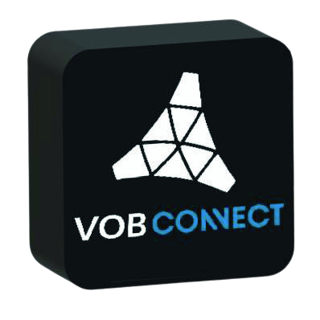

Możliwości systemu VOB
-
Jeden przewód
Jeden przewód zastępuje funkcję wielu kabli razem wziętych obecnie stosowanych na rynku. Transmisja danych i zasilanie urządzeń w jednym przewodzie
-
Konfiguracja
Konfiguracja urządzeń w czasie rzeczywistym w zależności od potrzeb użytkownika
-
Standardowa moc
Standardowa moc zasilania do 3600W przy napięciu 230V i możliwość dostosowania przewodu do indywidualnych potrzeb
-
Prędkość
Prędkość przesyłania informacji na poziomie 2,4 Gb/s która wraz z rozwojem technologii będzie rosła
-
Dalekosiężny
Brak spadku prędkości transferu danych w przypadku stosowania systemu VOB na dużych odległościach między nadajnikiem a odbiornikiem
-
Odporny
Jakiekolwiek uszkodzenie przewodu lub części instalacji spowoduje odłączenie zasilania w tej sekcji za którą był on odpowiedzialny, a system wskaże miejsce i rodzaj uszkodzenia
-
Uniwersalny
Możliwość zastąpienia wszystkich obecnie występujących złączy jak np.: HDMI, USB/C, Rj45. Przez jedno uniwersalne złącze lub zastosowanie adapterów. Nie wymusza zmiany obecnie używanych urządzeń
-
Scentralizowany
Jedna centrala łącząca i komunikująca wszystkie systemy i urządzenia dostępne dzisiaj na rynku
-
Bezpieczny
Ekranowany przewód blokuje smog elektromagnetyczny
-
Elastyczny
Bardzo łatwa instalacja, modyfikacja i rozbudowa systemu
-
Cyberbezpieczny
Sama budowa kabla zabezpiecza system przed utratą lub kradzieżą danych, a jego uniwersalność pozwala stosować go w każdej gałęzi przemysłu oraz szeroko pojętych usług
Czym dokładnie jest VOB
Rdzeniem systemu VOB jest innowacyjny przewód, a dokładniej jego przekrój. Umieszczony w centralnej części światłowód umożliwia przesyłanie informacji. Kolejne oploty miedziane umożliwiają dostarczenie energi elektryczej. A oplot zewnętrzny ekranuje i chroni cały przewód. Prosta konstrukcja o nieskończonych możliwościach. Do stworzenia dowolnej instalacji wystarczają jedynie pasywne rozdzielacze i uniwersalne puszki końcowe. W puszkach można zamontować dowolne urządzenie kompaktowe typu kamera, lampa, czujnik dymu, włącznik światła; lub zamontować dowolny rodzaj złącza jak HDMI, USB, antenowe, gniazdko elektyczne itp.
Wszystkie najważniejsze elementy do stworzenia systemu VOB są dostępne na rynku. Dzięki temu wdrożenie technologii VOB nie będzie tak drogie i czasochłonne. Elementem zarządzającym wszystkimi urządzeniami w instalacji jest centrala VOB. Jedna centrala wykonuje te same funkcję co wszystkie inne razem wzięte w klasycznych systemach. Transmisja danych opiera się na już istniejącej i ogólnie dostępnej technologii GPON w standardzie ITU-T G.984.x. z prędkością 2,4 Gb/s. Przewód umożliwia dostarczenie energii elektryczej do odbiornika o mocy do 3,6kW co jest również standardem w Europie. Innowacyjnością jest nowy rodzaj wtyczki która łączy część światłowodową przewodu z urządzeniami poprzez "styk" bez konieczności "spawania"(łączenia na stałe). Dodatkowo wtyczka łączy się pod dowolnym kontem z gniazdem odbiornika.
Co mówią o nas eksperci
-
"Pracuję w tej firmie 30 lat, ale takiego przekroju kabla jeszcze nie widziałem"
★ ★ ★ ★ ★
Rafał BodzońKierownik Zespołu Technologicznego ds. Kabli Telekomunikacyjnych i Światłowodowych w firmie TF Kabel
-
"Myślałem, że przyjdzie do mnie z jakimś ulepszeniem, a to jest rewolucja"
★ ★ ★ ★ ★
Piotr OkarmusRzecznik patentowy
-
"Najwięksi giganci sprzętów elektrycznych dążą do podłączenia wszystkich urządzeń do Internetu. A to jest najlepszy sposób. To rozwiązanie to kwestia czasu"
★ ★ ★ ★ ★
Dr inż. Mariusz Skoczylasadiunkt Politechniki Rzeszowskiej